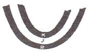
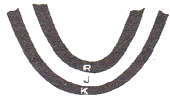
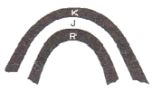
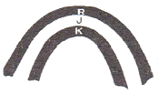
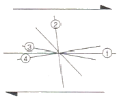
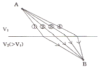
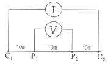
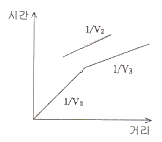
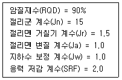

응용지질기사 (2011-08-21 기출문제)
1과목: 암석학 및 광물학
1. 사암에서 발견되는 중광물 중에서 모암이 고변성도의 변성암임을 강력히 시사해 주는 것은?
- 저어콘, 석류석
- 십자석, 규선석
- 황옥, 홍주석
- 남정석, 인회석
(정답률: 74%)

2. 다음 변성암의 조직 중 침상이나 판상의 광물들이 편리를 형성하지 않고 연접하여 공생하며 부분적으로 방사형을 이루는 조직은?
- 입상변정질(granoblastic) 조직
- 다이아블라스틱(diablastic) 조직
- 파쇄(cataclastic) 조직
- 잔류(relict) 조직
(정답률: 96%)
3. 다음 중 현무암질 마그마와 안산암질 마그마를 비교 설명한 것으로 옳지 않은 것은?
- 현무암질 마그마는 안산암질 마그마보다 SiO2 함량이 적다.
- 현무암질 마그마는 안산암질 마그마보다 점성이 작다.
- 현무암질 마그마는 안산암질 마그마보다 유동성이 크다.
- 화산분출시 마그마는 20% 정도가 현무암질 마그마이며, 안산암질 마그마는 40% 내외이다.
(정답률: 85%)
4. 오랜 시간에 걸쳐, 근원지로부터 매우 멀리 떨어진 곳에서 형성된 사암의 특징이 아닌 것은?
- 원마도, 구형도가 양호하다.
- 분급이 매우 양호하다.
- 석영 사암을 이룬다.
- 신선한 장석 입자들이 섞인다.
(정답률: 91%)
5. 쇄설성 퇴적암을 역암, 사암, 실트스톤, 셰일로 구분하는 기준은?
- 입자 크기
- 광물 조성
- 화학 성분
- 공극률
(정답률: 95%)
6. 대륙사면 주변의 해양환경에서 생성되는 저탁암에서 관찰할 수 있는 가장 특징적인 퇴적구조는?
- 건열
- 연흔
- 점이층리
- 반복층리
(정답률: 83%)
7. 다음 중 록키 산맥과 안데스 산맥을 포함하는 환태평양의 “불의 고리(ring of fire)”를 이루는 주요 암석은?
- 현무암
- 규암
- 대리암
- 안산암
(정답률: 75%)
8. 다음 중 화성암을 육안으로 감정하는데 가장 도움이 되지 않는 것은?
- 암석의 색
- 암석의 비중
- 조암광물의 종류
- 암석의 조직
(정답률: 85%)
9. 압력보다는 높은 온도의 영향으로 관입암체 주변에서 변성작용에 의하여 생성되는 단단하고 치밀한 입자들로 구성된 암석은?
- 백립암
- 혼펠스
- 페그마타이트
- 편마암
(정답률: 91%)
10. 화성암이 관입할 때 관입암체가 층리나 엽리에 나란하게 배열된 경우를 조화적 관입, 그리고 층리나 엽리를 가로지르는 경우를 부조화적 관입이라고 한다. 다음 중 조화적 관입에 해당하는 것은?
- 암맥(dike)
- 암상(sill)
- 암주(stock)
- 저반(batholith)
(정답률: 78%)
11. 두 개의 2회 축이 90도 각도로 교차 될 때 이들의 상호작용에 의해서 생성되는 정족은?
- 622
- 422
- 222
- 32
(정답률: 64%)
12. X선의 회절을 이용한 광물감정시에 격자의 대칭과 격자상수를 알 수 있는 방법은?
- 바이젠버그(Weissenberg) 방법
- 데바이쉐러(Debye-Scherrer) 사진방법
- 브래그(Bragg)의 회전법
- 부어거-프리세션(Buerger-Procession) 방법
(정답률: 70%)
13. 연속된 배위다면체 속에 있는 양이온간의 척력(반발력)이 가장 큰 경우는?
- 꼭지점을 공유하는 경우
- 능을 공유하는 경우
- 면을 공유하는 경우
- 독립적으로 존재하는 경우
(정답률: 83%)
14. 다음 중 광물의 색과 조흔색의 연결이 옳지 않은 것은? (단, 광물명 - 색 - 조흔색의 순서이다.)
- 자연금 - 황색 - 연황색
- 자철석 - 흑색 - 흑색
- 황철석 - 연황색 - 황색
- 황동석 - 진한 황색 - 녹흑색
(정답률: 70%)
15. 다음 중 결손고용체(Omission solid solution)에 속하는 광물은?
- 황철석(pyrite)
- 자황철석(pyrrhotile)
- 황비철석(arsenopyrite)
- 황동석(chalcopyrite)
(정답률: 72%)
16. 다음 중 백운모(mucovite)에서 볼 수 있는 광택은?
- 수지광택
- 금강광택
- 견사광택
- 진주광택
(정답률: 50%)
17. 다음 중 결정면 상에 조선(striation)이 발달되어 있는 특징을 흔히 관찰할 수 있는 광물은?
- 백운모
- 적철석
- 황철석
- 감람석
(정답률: 65%)
18. 흑연을 이루는 탄소 원자들의 화학적 결합방식으로 옳은 것은?
- 공유결합과 이온결합
- 이온결합과 금속결합
- 금속결함과 판데르바알스결합
- 공유결합과 판데르바알스결합
(정답률: 78%)
19. 다음 중 광학적 등방체에 해당하는 광물은?
- 방해석
- 자철석
- 금홍석
- 정장석
(정답률: 30%)
20. 역학적인 변형에 대한 저항의 정도가 낮은 광물에서 높은 광물의 순서로 올바르게 표시된 것은?
- 인회석 - 석영 - 형석
- 석고 - 형석 - 정장석
- 석영 - 정장석 - 석고
- 정장석 - 황옥 - 방해석
(정답률: 74%)
2과목: 구조지질학
21. 다음 중 천발, 중발, 심발지진이 모두 발생하는 곳은?
- 중앙해령
- 변환단층 경계
- 산 안드레아스 단층
- 섭입대
(정답률: 90%)
22. 우리나라의 추가령 열곡 같은 구조는 다음 중 어디에 가까운가?
- 협곡(canyon)
- 단층곡(fault valley)
- 메사(mesa)
- 뷰트(butte)
(정답률: 85%)
23. 지구 내부의 물리학적 층상구조(또는 유변학적 층상구조)에 해당되지 않는 것은?
- 암석권
- 연약권
- 하부맨틀
- 외핵
(정답률: 73%)
24. 사행 하도에서 침식이 가장 많이 일어나는 곳은?
- 굽이의 바깥쪽
- 굽이의 안쪽
- 굽이의 중앙
- 우각호 지역
(정답률: 87%)
25. 다음 그림에서 배사형 향사(antiformal syncline) 구조는 어느 것인가? (단, K : 신기지층 → R : 고기지층)




(정답률: 73%)
26. 다음 중 판구조론적 형성기작(mechanism)이 다른 열도는?
- 일본 열도
- 하와이 열도
- 알류산 열도
- 통가 열도
(정답률: 91%)
27. 다음은 한국의 지질계통에 따른 지질 단위이다. 고생대 지층이 아닌 것은?
- 장성층
- 만항층
- 동고층
- 도사곡층
(정답률: 35%)
28. 지질시대 연대표에서 신생대 제4기의 세(Epoch)에 해당하는 것은?
- 팔레오세
- 올리고세
- 플라이스토세
- 플라이오세
(정답률: 63%)
29. 암상이 서로 교호하는 암석 내에서 흔히 형성되는 습곡구조로서, 단순 전단력이 불연속적으로 또는 층의 경계면에 집중되면서 형성되는 것은?
- 요굴 슬립 습곡
- 요굴 유동 습곡
- 접선 종변형 습곡
- 역접선 종변형 습곡
(정답률: 67%)
30. 다음 중 지판(Plate)의 수렴경계(Converging Boundary)에 해당하는 곳은?
- 해령(Oceanic Ridge)
- 변환단층(Transform Fault)
- 후배호 분지(Back Arc Basin)
- 해구(Oceanic Trench)
(정답률: 75%)
31. 수계발달 특성 중 기반암의 지질구조에 의한 것이 아닌 것은?
- 평행 수계(parallel drainage)
- 격자상 수계(trellis drainage)
- 장방형 수계(rectangular drainage)
- 수지상 수계(dendritic drainage)
(정답률: 88%)
32. 다음 중 맨틀(mantle)에 대한 설명으로 옳지 않은 것은?
- 핵(core)을 둘러싸고 있으며 밀도가 높은 암석으로 된 두꺼운 층을 맨틀이라 한다.
- 맨틀의 밀도는 핵보다 낮지만 지각보다는 높다.
- 맨틀은 주로 유문암과 같은 암석으로 이루어져 있다.
- 맨틀의 두께는 약 2,900km 이다.
(정답률: 82%)
33. 다음 중 반감기가 가장 긴 방사성 동위원소 절대연령측정 방법은?
- 우라늄 - 납 방법
- 루비듐 - 스트론튬 방법
- 칼륨 - 아르곤 방법
- 토륨 - 납 방법
(정답률: 50%)
34. 지구내부의 구조를 알기 위해서 지진파를 주로 사용한다. 이는 지진파의 어떠한 성질을 주로 이용한 것인가?
- 화학성분에 따른 투과도 변화
- 응력에 따른 가속도 변화
- 밀도에 따른 속도 변화
- 암종에 따른 대자율 변화
(정답률: 92%)
35. 다음은 어떤 지구조 환경 하에서 발생할 수 있는 지질구조들이다. 형성 환경이 나머지 셋과 다른 하나는?
- 지루(Horst)
- 점완단층(Listric fault)
- 지구(Graben)
- 변환단층(Transform fault)
(정답률: 84%)
36. 암석과 유체를 함유한 기공의 비율이 각각 20%와 80%인 균질한 부석(pumice)이 있다. 부석에 가해진 전체 평균 응력이 24MN/m2 이고 유체를 함유한 기공에 대한 응력이 12MN/m2 이라면, 부석의 암석 부분에 가해진 평균 하중은?
- 36MN
- 72MN
- 168MN
- 240MN
(정답률: 61%)
37. 다음 그림은 우수향 단순 전단 운동에 의한 리델 전단을 표시한 것이다. 이름과 전단 특징이 잘못 연결된 것은?

- ① - Y 전단 : 우수향 전단
- ② - 공액 리델 (R') 전단 : 좌수향 전단
- ③ - 리델 (R) 전단 : 우수향 전단
- ④ - P 전단 : 좌수향 전단
(정답률: 77%)
38. 화강암과 같은 등방질(等方質, isotropic)암석이 풍화작용으로 하중이 감소될 때 생기는 절리는?
- 주상절리(columnar joint)
- 층상절리(sheeting joint)
- 우모상절리(feather joint)
- 공액절리(conjugate joint)
(정답률: 71%)
39. 다음 중 선구조(lineation)가 아닌 것은?
- 단층조선
- 엽리(Foliation)
- 부딘구조(Boudinage)
- 멀리온구조(Mulion)
(정답률: 84%)
40. 다음 중 대륙지각에 해당하지 않는 것은?
- 순상지(shield)
- 대지(platform)
- 강괴(craton)
- 오피(ophiolite)
(정답률: 84%)
3과목: 탐사공학
41. 다음 중 중력 이상이 생기지 않는 지질구조는?
- 화강암이 관입된 지질구조
- 향사구조
- 단층
- 수평적으로 편평한 다층구조
(정답률: 95%)
42. 다음 중 현장에서 자연수 시료의 채취방법으로 옳지 않은 것은?
- 하천수 시료를 채취할 때에는 반드시 흐르는 물의 중앙에서 시료병이 물속에 잠기도록 넣어서 채취한다.
- 시료채취 지점의 물로 시료병을 여러번 세척한 후 뚜껑 부분까지 채워서 채취한다.
- 펌프가 설치된 관정에서는 펌프를 작동시킨 후 바로 시료를 채취해야 한다.
- 수온, 전기전도도, pH 등은 현장에서 직접 측정하는 것이 좋다.
(정답률: 76%)
43. 1층 및 2층의 탄성파 속도가 각각 500, 1000m/sec인 수평 2층 구조에서 탄성파 음원으로부터 50m 떨어진 지점에 반사파가 도착하는 시간은? (단, 1층의 심도는 10m 이다.)
- 0.⑤초
- 0.11초
- 0.24초
- 0.33초
(정답률: 49%)
44. 전기비저항이 낮은 평탄한 지역에서 지표 전기비저항탐사를 수행할 경우 나타나는 현상과 그 대처 방안에 대한 설명으로 옳은 것은?
- 측정값이 매우 커지므로 전극 간격을 넓게 하는 것이 유리하다.
- 측정값이 매우 작으므로 가능한 신호대 잡음비가 높은 전극배열을 사용한다.
- 측정값이 음의 값을 보일 경우 절대값을 취하여 해석에 사용한다.
- 측정값이 0에 가까운 경우는 측정 장비의 고장이므로 수리해야 한다.
(정답률: 80%)
45. 인공송신원을 사용하는 전자탐사법인 CSAMT 탐사에 대한 설명으로 옳지 않은 것은?
- 조사지역으로부터 일반적으로 침투심도만큼 떨어진 위치에 송신원을 설치한다.
- 송신원의 사용 주파수는 0.1Hz에서 20Hz 정도이며, 강력한 신호를 만들기 위해서 고출력 송신기를 사용한다.
- 송신원은 주로 양 끝이 접지된 길이 1-3km의 긴 전선을 사용한다.
- 측정은 서로 직교하는 전기장의 자기장을 모두 측정하는 방식과 단지 한 방향의 전기장과 이에 수직한 자기장을 측정하는 방식이 있다.
(정답률: 56%)
46. 플럭스게이트 자력계에 대한 설명으로 옳지 않은 것은?
- 강자성체의 자기 포화 특성을 이용하여 자기장을 측정하는 기기이다.
- 코일의 배열 방향에 따라 총자기나 특정한 방향의 성분을 측정할 수 있다.
- 플럭스게이트 자력계는 자기장의 기울기에 대하여 민감하므로 자기장의 기울기가 큰 곳에서는 사용할 수 없다.
- 플럭스게이트 자력계는 연속적인 출력을 얻을 수 있으므로 항공탐사에 효과적으로 사용된다.
(정답률: 82%)
47. 공기 중에서 물로 수직 입사하는 레이다파의 반사계수를 구하면 얼마인가? (단, 공기의 유전상수는 1, 물의 유전상수는 81이다.)
- 0.7
- 0.8
- 0.9
- 1.0
(정답률: 79%)
48. 자연 잔류 자기의 현재의 지자기장에 의한 유도 자기와의 비를 무엇이라고 하는가?
- Eötvös 비
- Königberger 비
- Moho 비
- Poisson 비
(정답률: 64%)
49. 다음 중 지오레이다 탐사법의 적용분야가 아닌 것은?
- 지하 매설물 조사
- 천부의 정밀 지반조사
- 해저 심부의 유적지 탐사
- 구조물의 안전진단을 위한 비파괴 검사
(정답률: 67%)
50. 반사법 탄성파 탐사에서 취득된 자료에 대한 보정 작업의 하나로서 각 수신점의 고도 변화, 풍화대 두께의 차이, 속도가 낮은 풍화대에 의한 시간차를 보정해 주는 것은?
- 구조보정
- 뮤팅(muting)
- NMO보정
- 정보정
(정답률: 45%)
51. 다음 중 유도분극(induced polarization)현상의 발생 원인이 아닌 것은?
- 과전압(overvoltage)
- 막(membrane)분극
- 전극(electrode)분극
- 자기유도(magnetic induction)
(정답률: 60%)
52. 지하에서 자연적으로 발생하는 전위를 자연전위라 한다. 다음 중 발생원인의 성격이 나머지 셋과 다른 것은?
- 전기역학적 전위
- 확산 전위
- 셰일 전위
- 광화 전위
(정답률: 82%)
53. 다음 중 반사법 탄성파 탐사자료의 처리 순서로 옳은 것은?
- 트레이스 편집 - NMO 보정 - CMP 중합 - 구조보정
- 트레이스 편집 - NMO 보정 - 구조보정 - CMP 중합
- CMP 중합 - NMO 보정 - 구조보정 - 트레이스 편집
- NMO 보정 - 구조보정 - CMP 중합 - 트레이스 편집
(정답률: 67%)
54. 다음 그림과 같이 하부층의 속도가 상부층의 속도보다 큰 구조에서, A 지점에서 B 지점까지 탄성파가 전달될 때의 파의 전파경로로 옳은 것은?

- ①번 경로
- ②번 경로
- ③번 경로
- ④번 경로
(정답률: 96%)
55. 원소의 종류를 지구화학적으로 다음과 같이 네 가지로 분류하였을 때 대표적인 원소의 연결로 옳지 않은 것은? (단, Goldschmidt의 분류에 따른다.)
- 친철 원소 - 니켈
- 친동 원소 - 비소
- 친석 원소 - 바나듐
- 친기 원소 - 염소
(정답률: 62%)
56. 신틸레이션 미터(scintillation meter)에서 가장 많이 사용되는 γ(감마)선 검출 결정(結晶)은 다음 중 어느 것인가?
- SiO2
- Ge
- NaI
- Al
(정답률: 85%)
57. 중력탐사자료의 처리를 위하여 보정작업이 수행되어야 하는데 다음 중 중력 보정(gravity correction)에 해당하지 않는 것은?
- 밀도보정
- 위도보정
- 대기보정
- 후리-에어보정
(정답률: 66%)
58. 다음 중 셰일지층을 구분하는데 가장 효과적인 검층방법은?
- 자연감마선 검층
- 음파 검층
- 온도 검층
- 자력 검층
(정답률: 84%)
59. 다음 그림과 같은 전극배열을 이용하여 전기비저항탐사를 실시하였다. 전류 100mA 일 때, 전위차 200mV를 측정하였다면 겉보기 전기비저항 값은 얼마인가?

- 31.4Ω-m
- 62.8Ω-m
- 125.6Ω-m
- 251.2Ω-m
(정답률: 59%)
60. 수평 3층 구조에 대해 굴절법 탄성파탐사를 실시하여 다음과 같은 주시곡선을 얻었다며 그 이유로서 가장 적장한 것은 어느 것인가? (단, 1층의 속도= V1, 2층의 속도= V2, 3층의 속도= V3)

- 중간층의 속도가 상하부층의 속도보다 느리기 때문이다.
- 중간층의 속도가 상하부층의 속도보다 빠르기 때문이다.
- 중간층의 두께가 상하부층에 비해 매우 얇기 때문이다.
- 중간층의 두께가 상하부층에 비해 매우 두껍기 때문이다.
(정답률: 85%)
4과목: 지질공학
61. 다음 중 수두(hydraulic head)에 관한 설명으로 옳지 않은 것은?
- 전체 수두는 단위중량의 물이 갖는 에너지의 합을 의미한다.
- 물의 흐름은 위치수두가 작은 지점에서 큰 지점으로 향한다.
- 전체 수두는 압력수두와 위치수두, 속도수두의 합으로 주어진다.
- 수두손실은 물과 매질 사이의 마찰에 의해 발생한다.
(정답률: 67%)
62. 지반응력 중 수직방향 응력은 σv, 수평방향 응력은 각각 σh1, σh2이다. 최대 및 최소주응력을 σ1, σ3라고 할 때, 주향이동단층(strike-slip fault)의 발생과 관련된 응력조건은?
- σ1=σh1, σ3=σh2
- σ1=σh1, σ3=σv
- σ1=σv, σ3=σh1
- σ1=σv, σ3=σh2
(정답률: 81%)
63. 액성한계가 76%, 소성한계가 43%, 수축한계가 16%인 점토의 소성지수는 얼마인가?
- 27%
- 33%
- 59%
- 69%
(정답률: 85%)
64. 다음은 암반분류법인 Q 분류법의 변수 값이다. Q 값을 구하면 얼마인가?

- 0.13
- 2.0
- 4.5
- 18.0
(정답률: 84%)
65. 지반 개량 공법 중 연직배수(vertical drain) 공법에 대한 설명으로 옳지 않은 것은?
- 압밀침하를 촉진시키는 공법이다.
- 지반의 강도를 증가시키는 공법이다.
- 사질지반에 주로 적용되는 공법이다.
- 샌드 드레인 공법, 페이퍼 드레인 공법 등으로 구분할 수 있다.
(정답률: 40%)
66. 지형의 특성에 따라 충적층을 다음과 같이 구분할 때 일반적으로 충적층의 두께가 가장 두꺼운 지층은?
- 선상지
- 해안평야
- 범람원
- 곡간평야
(정답률: 66%)
67. 어떤 흙 시료의 전체밀도는 2.0g/cm3, 흙 입자의 밀도는 2.5g/cm3, 공극비는 0.5 이다. 시료에 존재하는 물의 부피가 250cm3 인 경우, 흙 입자의 부피는 얼마인가?
- 200cm3
- 300cm3
- 400cm3
- 500cm3
(정답률: 48%)
68. 지반조사를 목적으로 실시하는 시료채취(soil sampling)에 대한 설명으로 옳지 않은 것은?
- 지반의 특성을 파악하고 실내시험용 시료를 얻기 위하여 샘플러를 사용하여 시료를 채취한다.
- 채취된 비교란 시료는 완충재료로 포장한 후 눕히지 말고 수직으로 세워서 운반한다.
- 교란 시료는 단위중량, 압축성, 전단강도 등과 같은 역학적 특성을 파악하는데 사용한다.
- 비교란 시료는 고정피스톤 샘플러, 포일 샘플러 등을 사용하여 채취할 수 있다.
(정답률: 75%)
69. 지반조사 및 시험을 위해 실시하는 시추법 중 비트회전으로 지반을 분쇄하여 굴진하며 토사 및 암반 등 거의 모든 지층에 사용 가능한 방법은?
- 충격식 시추
- 회전식 시추
- 오거식 시추
- 변위식 시추
(정답률: 85%)
70. 사면안정공법 중 안전율 유지를 위한 사면보호공법(억제공법)에 해당되지 않는 것은?
- 압성토 공법
- 배수 공법
- 피복 공법
- 표층 안정 공법
(정답률: 50%)
71. 흙 속의 공극수가 얼어서 흙의 부피가 팽창하여 지표면이 부풀어 오르는 현상을 동상(frost heave)이라고 한다. 다음 중 동상이 가장 잘 일어나는 흙은 어느 것인가?
- 실트
- 자갈
- 모래
- 점토
(정답률: 58%)
72. 3개의 층으로 이루어진 지반이 있다. 층의 두께는 상부로부터 3m, 4m, 5m이고, 이 층들의 투수계수는 각각 1.0×10-4cm/sec, 2.0×10-2cm/sec, 2.0×10-5cm/sec 이다. 수평방향으로의 등가투수계수는 얼마인가?
- 6.7×10-3cm/sec
- 6.7×10-4cm/sec
- 4.3×10-5cm/sec
- 4.3×10-6cm/sec
(정답률: 53%)
73. 다음 중 지반침하를 형태에 따라 분류할 때 골형 침하(through subsidence)에 대한 설명으로 옳지 않은 것은?
- 수평층 또는 완만한 경사층에서 발생하는 경향이 있다.
- 넓은 지역에 걸쳐 발생한다.
- 침하량이 크고 침하 형상이 불연속적이다.
- 심도에 크게 영향을 받지 않는다.
(정답률: 75%)
74. 다음 시험법 중 획득하고자 하는 특성값이 다른 하나는?
- 플랫 잭(flat jack) 법
- 수압파쇄시험법
- 응력해방법
- 공내재하시험법
(정답률: 75%)
75. 다음 중 압열인장시험(Brazilian test)에 대한 설명으로 옳지 않은 것은?
- 인장강도를 간접적으로 측정하기 위한 시험이다.
- 시험편 내에 인장과 압축이 동시에 발생한다.
- 직경(d) 대 두께(t)의 비(t/d)가 0.5~1.0 인 원판 형태의 시험편을 사용하여 시험을 실시한다.
- 원판의 중앙부에는 압축응력과 인장응력이 동일한 크기로 발생한다.
(정답률: 61%)
76. 다음 중 토질 사면의 전단응력을 증가시키는 요인에 해당하는 것은?
- 굴착에 의한 균열 발생
- 공극수압의 증가
- 느슨한 토립자의 진동
- 흡수에 의한 점토지반의 팽창
(정답률: 36%)
77. 다음 중 암반의 동결융해작용에 의하여 나타나는 영향으로 적당하지 않은 것은?
- 일축압축강도가 감소한다.
- 탄성파속도(P파속도)가 증가한다.
- 흡수율이 증가한다.
- 풍화대의 깊이가 깊어진다.
(정답률: 83%)
78. 흙의 투수계수에 영향을 미치는 요소에 대한 설명으로 옳지 않은 것은?
- 흙 입자의 크기가 클수록 투수계수는 증가한다.
- 물의 점성이 클수록 투수계수는 증가한다.
- 흙의 포화도가 클수록 투수계수는 증가한다.
- 물의 온도가 높을수록 투수계수는 증가한다.
(정답률: 86%)
79. 주향과 경사가 각각 N70W, 50SW인 절리의 방향성을 경사방향/경사로 올바르게 나타낸 것은?
- 070/50
- 110/50
- 200/50
- 290/50
(정답률: 55%)
80. 암반 불연속면의 거칠기(roughness) 조사에 대한 내용으로 옳지 않은 것은?
- 거칠기는 일반적으로 10m 길이의 불연속면에 대한 거친 정도를 나타내는 것이다.
- 단면 측정기(Profile gauge)로 측정할 수 있다.
- 거칠기의 증가는 전단강도의 증가를 유발한다.
- JRC(Joint Roughness Coefficient)가 클수록 굴곡이 심하다는 것을 나타낸다.
(정답률: 66%)
5과목: 광상학
81. 다음 중 큰 규모의 마그네사이트 광상이 부존되어 있는 지층은 어느 것인가?
- 마천령계
- 연천계
- 옥천계
- 상원계
(정답률: 72%)
82. 한국의 주요 금속광상 중 성인상 분류 시 광상유형별 대표적인 광상의 연결로 옳지 않은 것은?
- 각력파이프상광상 : 달성, 일광
- 스카른형광상 : 연화, 울산
- 열수교대광상 : 양양, 소연평도
- 열극충진맥상광상 : 함안, 고성
(정답률: 56%)
83. 다음 중 광상의 생성온도를 측정하는데 사용하는 지질온도계로서 활용될 수 없는 것은?
- 안정동위원소
- 유체포유물
- 조성광물의 해리 온도
- 광물의 부존심도
(정답률: 43%)
84. 우리나라의 우라늄광상이 가장 많이 산출되는 지층은?
- 옥천계
- 대동계
- 경상계
- 평안계
(정답률: 95%)
85. 다음 중 VMS광상(화산성 괴상황화광상)에 대한 설명으로 옳지 않은 것은?
- 화산활동에 의한 광상으로 동시에 형성된 화산암이 수반된다.
- 층상의 형태를 띠는 황화광상을 형성한다.
- 중심으로부터 Fe → Cu → Zn → Pb의 금속 분대를 보인다.
- 일반적으로 철(Fe)이 많은 규산질의 퇴적물이 나타난다.
(정답률: 73%)
86. 다음 중 광석광물의 생성순서를 파악하는 구조(조직)나 특징과 관계없는 것은?
- 횡단구조(cross-cutting structure)
- 행인상 조직(amygdaloidal texture)
- 포유물(inclusion)
- 가정구조(pseudomorph structure)
(정답률: 80%)
87. 다음 중 상동 중석광상에 대한 설명으로 옳지 않은 것은?
- 이 광상은 전형적인 스카른형 광상에 속한다.
- 이 광상의 관계화성암은 백악기 화강암이다.
- 주 광체는 풍촌석회암층과 묘봉슬레이트층 내에 배태된다.
- 이 광상에서 광석을 함유하는 석영맥은 산출되지 않는다.
(정답률: 52%)
88. 우리나라에서 대규모 석회석 광상을 배태하고 있는 지층의 지질시대는?
- 제3기
- 쥐라기
- 페름기
- 오오도비스기
(정답률: 60%)
89. 우리나라 중열수형 금 · 은 광상의 특성에 해당하는 것은?
- 광화시기는 백악기말 ~ 제3기이다.
- 금 : 은의 비는 1 : 10 ~ 1 : 20 이다.
- 추정 생성심도는 750m 미만이다.
- 광상의 모암은 화강편마암이다.
(정답률: 65%)
90. 때때로 품위가 높은 함금맥을 형성하는 알라스카이트(alaskite) 암맥은 어떤 암석의 변종인가?
- 섬장암
- 화강암
- 페그마타이트
- 규장암
(정답률: 69%)
91. 마그마의 분결분산(segregation dissemination)작용에 의하여 생성된 대표적인 광물은?
- 구리
- 강옥
- 크롬철석
- 니켈
(정답률: 52%)
92. 보크사이트(Bauxite) 광상의 성인으로 옳은 것은?
- 유기적 침전광상
- 화학적 침전광상
- 변성광상
- 풍화잔류광상
(정답률: 69%)
93. 열수광상의 모암변질작용 중 알칼리성 열수용액의 교대작용으로 인해 광상의 모암이 백운모 계열의 인편상집합체로 치환되는 변질작용은?
- 규화작용(Silicification)
- 변질안산암화작용(Propylitization)
- 녹니석화작용(Chloritization)
- 견운모화작용(Sericitization)
(정답률: 84%)
94. 다음 중 석탄의 탄화가 진행됨에 따라 물리-화학적 성질의 변화로 옳지 않은 것은?
- 수소(H)의 증가
- 비중의 증가
- 알칼리 용액 내에서의 용해도 감소
- 색, 광택 및 반사도의 증가
(정답률: 64%)
95. 다음 중 다양한 요인의 분급(sorting) 작용의 결과 생성되는 퇴적광상의 유형은?
- 2차 부화광상
- 호상 철광상
- 표사광상
- 잔류광상
(정답률: 43%)
96. 다음 중 질석광상에 대한 설명으로 옳지 않은 것은?
- 질석은 주로 경량골재, 내열재, 보온재, 방음재 등으로 활용된다.
- 우리나라에서는 주로 충남지역에서 생산되고 있다.
- 질석은 크게 산성암류의 접촉교대작용과 풍화작용으로 형성되는 두 가지 유형으로 구분된다.
- 우리나라에서 풍화작용에 의한 질석화의 경로는 금운모 → 질석, 각섬석 → 질석, 녹니석 → 질석, 흑운모 → 질석 등의 네 가지 경로로 추정된다.
(정답률: 45%)
97. 다음 중 금속광석광물의 가장 일반적인 산출 형태는?
- 규산염광물
- 인산염광물
- 탄산염광물
- 황화광물
(정답률: 73%)
98. 다음 중 반암동광상의 형성과 가장 관계가 깊은 판의 경계는?
- 확장경계
- 섭입경계
- 충돌경계
- 변환단층경계
(정답률: 81%)
99. 일반적으로 유체포유물 분석시 가장 풍부하게 산출되는 원소는?
- 칼륨
- 칼슘
- 나트륨
- 염소
(정답률: 82%)
100. 국내 부존량이 가장 풍부한 비금속 광물 자원은 고령토이다. 우리나라 고령토 광상의 산출형태와 거리가 가장 먼 것은?
- 페그마타이트광상
- 퇴적광상
- 풍화잔류광상
- 열수광상
(정답률: 69%)